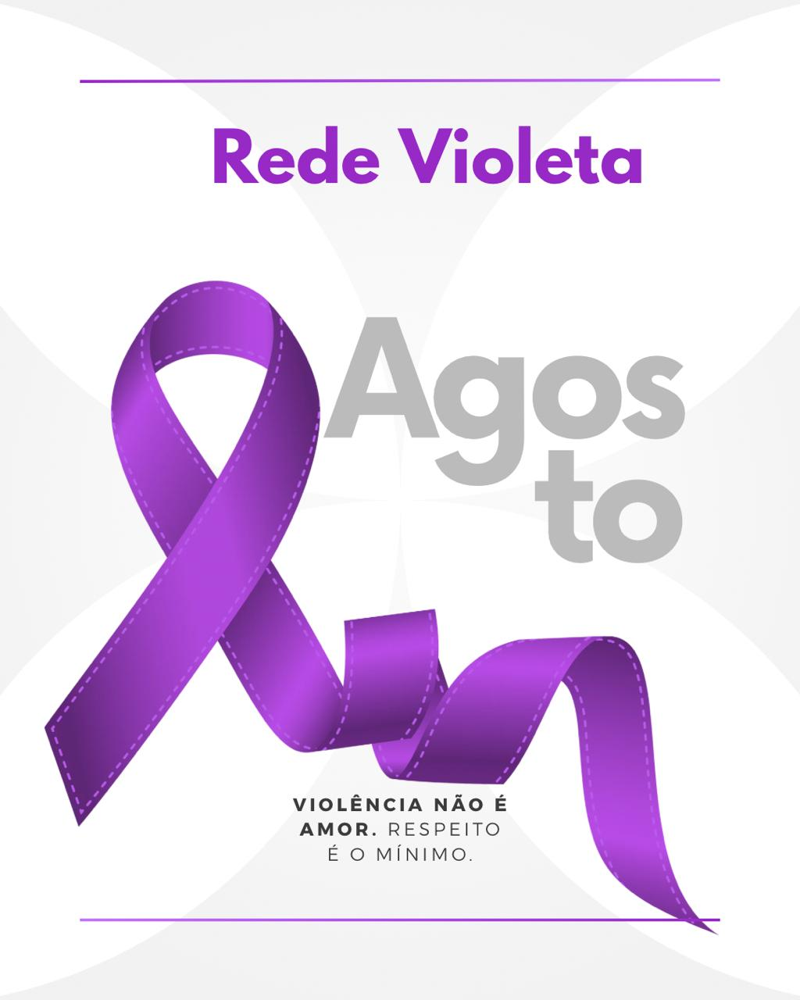

💜
Acolhimento
respeito • informação • proteção

Rede Violeta — Juntas contra a violência
Um espaço seguro para desabafar, aprender e denunciar o assédio.
Ambiente confidencialA Rede Violeta é um projeto acadêmico criado para informar, acolher e apresentar caminhos de apoio para mulheres que estejam passando por situações de violência.
respeito • informação • proteção
Aqui você pode escrever o que está sentindo de forma livre e segura. Suas palavras são tratadas com total sigilo.
Algumas formas de cuidar de você neste momento:
O Agosto Lilás é um movimento nacional de conscientização contra a violência doméstica e sexual. Instituído em agosto — mês da Lei Maria da Penha (Lei nº 11.340/2006, sancionada em 07/08/2006) — o movimento usa o roxo/lilás como símbolo de resistência e esperança.
No Brasil, 1 mulher é vítima de violência a cada 6 minutos. Falar sobre isso é o primeiro passo para mudar.
Conhecer casos históricos ajuda a compreender a importância da prevenção, da informação e da rede de proteção.
A socialite mineira foi assassinada pelo então namorado. O julgamento provocou grande debate social sobre a culpabilização da vítima e impulsionou discussões importantes sobre a violência contra mulheres.
A atriz e bailarina foi assassinada em 1992. O caso provocou grande mobilização social e a participação de sua mãe, Gloria Perez, em mudanças na legislação penal.
Aos 15 anos, Eloá foi mantida em cárcere privado pelo ex-namorado em Santo André, SP. O caso teve grande repercussão nacional e o agressor foi condenado a 98 anos e 8 meses.
Eliza desapareceu em 2010. O caso envolveu o então goleiro Bruno Fernandes e teve grande repercussão nacional, evidenciando a importância de redes de proteção.
A advogada foi assassinada em 2010. O caso foi julgado pelo Tribunal do Júri de Guarulhos — primeiro julgamento televisionado ao vivo no Brasil. O agressor foi condenado a 22 anos e 8 meses.
Importante: os casos apresentados são fatos históricos utilizados exclusivamente para fins educativos e de conscientização.
Assédio é qualquer comportamento indesejado que cause constrangimento, humilhação, intimidação ou sofrimento. Pode ser físico, verbal, virtual ou psicológico.
Exposição repetida a situações humilhantes ou constrangedoras no ambiente de trabalho.
Conduta de natureza sexual não desejada, que constranja ou cause desconforto.
Perseguição, humilhação ou ameaças realizadas por meios digitais.
Comportamentos controladores e abusivos dentro de relações familiares ou afetivas.
Comportamento agressivo e repetitivo contra estudantes em ambiente escolar.
Se você está passando por assédio, pode notar alguns desses efeitos:
Eventos históricos relevantes para a legislação de proteção à mulher.
Encontre a DEAM mais próxima. Clique no marcador para ver endereço e telefone.
Responda as perguntas abaixo com sinceridade. O resultado é apenas orientativo e não substitui apoio profissional.
1. Alguém faz comentários, piadas ou gestos de conteúdo sexual ou íntimo sem sua permissão?
2. Você sente medo ou ansiedade quando vai ao trabalho, escola ou se relaciona com alguém específico?
3. Alguém te pressiona, chantageia ou ameaça para obter algum favor, presença ou contato?
4. Você recebe mensagens, ligações ou contatos insistentes mesmo depois de pedir que parem?
5. Alguém te humilha, grita, te diminui ou critica na frente de outras pessoas?
6. Você evita certos lugares, situações ou pessoas por se sentir insegura/o?
7. Alguém controla o que você faz, com quem fala, onde vai ou como se veste?
8. Você se culpa por situações em que foi tratada/o de forma desrespeitosa?
Toque em uma opção para ligar agora.
Acesse os sites oficiais para encontrar atendimento perto de você.
Assédio é um comportamento repetido e indesejado de natureza sexual, moral ou psicológica. Violência pode ser um único ato físico, sexual, psicológico, patrimonial ou moral. Ambos são crimes — a diferença está na forma e na frequência, mas os dois merecem denúncia.
Sim. O Disque 100 e o Disque 180 aceitam denúncias anônimas. A identidade não é necessária para que a denúncia seja investigada.
Não para o Boletim de Ocorrência. Você pode registrar sozinha/o na delegacia ou online. Para processos judiciais é recomendado, mas a Defensoria Pública oferece assistência jurídica gratuita para quem não tem condições de contratar advogado particular.
Não. O STJ e o STF entendem que a Lei Maria da Penha protege mulheres trans e travestis, pois o critério é gênero feminino, não biológico. Homens cisgêneros podem recorrer ao Código Penal e à Lei nº 13.772/2018 em casos de violência doméstica.
1. A delegacia abre um Inquérito Policial.
2. O Ministério Público recebe o inquérito e pode oferecer denúncia criminal.
3. Você pode solicitar Medidas Protetivas de Urgência (afastamento do agressor, por exemplo).
4. O juiz decide sobre as medidas em até 48h.
5. O processo segue para julgamento.
Em crimes de ação penal pública (como os previstos na Lei Maria da Penha), a denúncia não pode ser retirada pela vítima após o processo iniciado — cabe ao Estado prosseguir. Isso protege a vítima de pressões do agressor. A retratação só é possível antes do recebimento da denúncia pelo juiz, mediante audiência.
Guarde prints de mensagens, e-mails, registros de chamadas. Anote datas, horários e o que foi dito. Identifique testemunhas. Registre ocorrência no RH com protocolo. Em seguida, procure a Delegacia do Trabalho (MTE) ou ajuíze ação na Justiça do Trabalho. O assédio moral é ilícito civil (art. 186 CC) e pode resultar em demissão por justa causa do agressor.
É uma determinação judicial que pode: proibir o agressor de se aproximar da vítima; proibi-lo de contato por qualquer meio; retirá-lo do lar; suspender porte de arma. É solicitada ao registrar o B.O. e decidida pelo juiz em até 48 horas. Descumprir medida protetiva é crime com pena de 3 meses a 2 anos de prisão (art. 24-A da Lei Maria da Penha).
Sim. A Lei nº 13.772/2018 criminaliza o registro não autorizado de conteúdo íntimo. A Lei nº 13.718/2018 criou o crime de importunação sexual online. Compartilhamento de fotos íntimas sem consentimento (revenge porn) é crime com pena de 1 a 5 anos. Denuncie também pelo SaferNet.
Dados do Fórum Brasileiro de Segurança Pública 2023 e do IPEA.
Principal cenário de violência doméstica e psicológica. A vítima convive com o agressor.
Ruas, praças, feiras e pontos de ônibus. Maior incidência nos horários de pico.
Praticado por colegas, superiores ou clientes. Muitas vezes silenciado por medo de demissão.
Metrô, ônibus e terminais. Especialmente intenso nos horários de pico.
Afeta principalmente jovens e adolescentes; pode começar no ambiente virtual.
Redes sociais, aplicativos e grupos de mensagem. Crimes com pena de 1 a 5 anos.
Registre uma situação de risco para alertar outras pessoas. Não inclua dados pessoais de vítimas.
Relatos recorrentes de importunação sexual nos vagões entre as estações Paraíso e Ana Rosa nos horários de pico.
Homem seguindo mulheres que saem do trabalho no período noturno. Comportamento identificado em mais de uma ocasião.
Situação de violência doméstica em andamento relatada por vizinhas. Pedido de apoio e orientação à comunidade.
Supervisora humilha funcionárias publicamente em reuniões, atribui erros alheios a elas e ameaça demissão sem justificativa. Pelo menos 5 relatos confirmados.
Grupo no Telegram compartilha fotos e vídeos íntimos de mulheres sem consentimento. Vítimas identificadas já acionaram a SaferNet.
Perfis falsos criados para assediar mulheres com mensagens íntimas não solicitadas. Múltiplas vítimas relataram o mesmo padrão.
Homem encosta e faz comentários obscenos em mulheres que aguardam ônibus no período da tarde. Relatado por passageiras em diferentes dias.
Mulher agredida fisicamente por parceiro em via pública. Vizinhos chamaram a PM. Vítima está em abrigo. Caso em acompanhamento pela Delegacia da Mulher.
Ex-aluno persegue estudante dentro do campus, manda mensagens ameaçadoras e aparece em locais que ela frequenta. Caso registrado na ouvidoria da universidade.
Grupo de homens abordando mulheres de forma agressiva na orla. Situação especialmente intensa nos finais de semana.
Mulher foi agredida com socos pelo companheiro após tentar terminar o relacionamento. Filho menor de idade presenciou. Medida protetiva solicitada.
Homens abordam mulheres que estão sozinhas na praia, fazem comentários sexuais e seguem mesmo após pedido de afastamento. Situações repetidas nos fins de semana.
Mulheres relatam apalpamentos e comentários sexuais na feira, especialmente em dias de maior movimento. Policiamento pedido por feirantes.
Advogada relata que sócio faz comentários sobre seu corpo e envia mensagens com conotação sexual. Dois outros funcionários testemunharam situações.
Moradora relata agressões verbais e físicas frequentes. Tentou registrar BO, mas se sentiu intimidada. Vizinhos solicitam apoio de assistência social.
Funcionárias relatam assédio moral sistemático por parte de gerência. Situação já reportada ao RH sem resolução.
Enfermeiras relatam chefia que distribui tarefas degradantes apenas para mulheres, faz piadas sexistas e pune quem reclama com escalas piores.
Grupo de alunos cria memes ofensivos com fotos de colegas do sexo feminino e circula em grupos de turma. Direção da escola foi comunicada.
Este site foi desenvolvido como projeto acadêmico para a Faculdade Cruzeiro do Sul, com finalidade educativa e de conscientização sobre violência contra a mulher.
A Rede Violeta não substitui serviços públicos, atendimento policial, médico, psicológico ou jurídico profissional.
Assistente da Rede Violeta · Online 💜